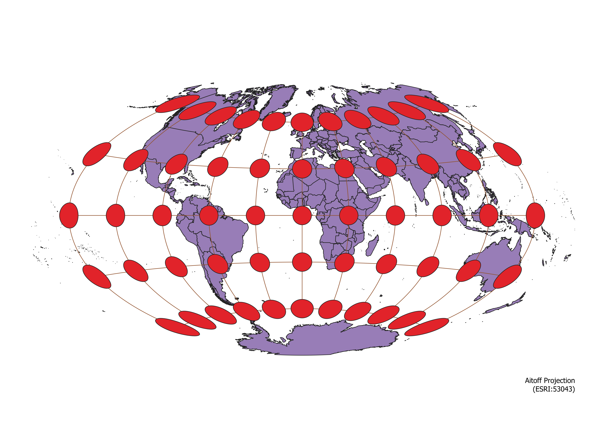
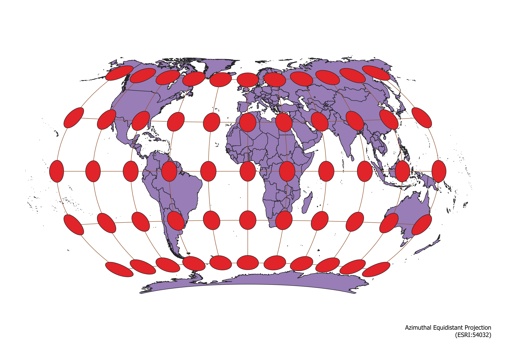
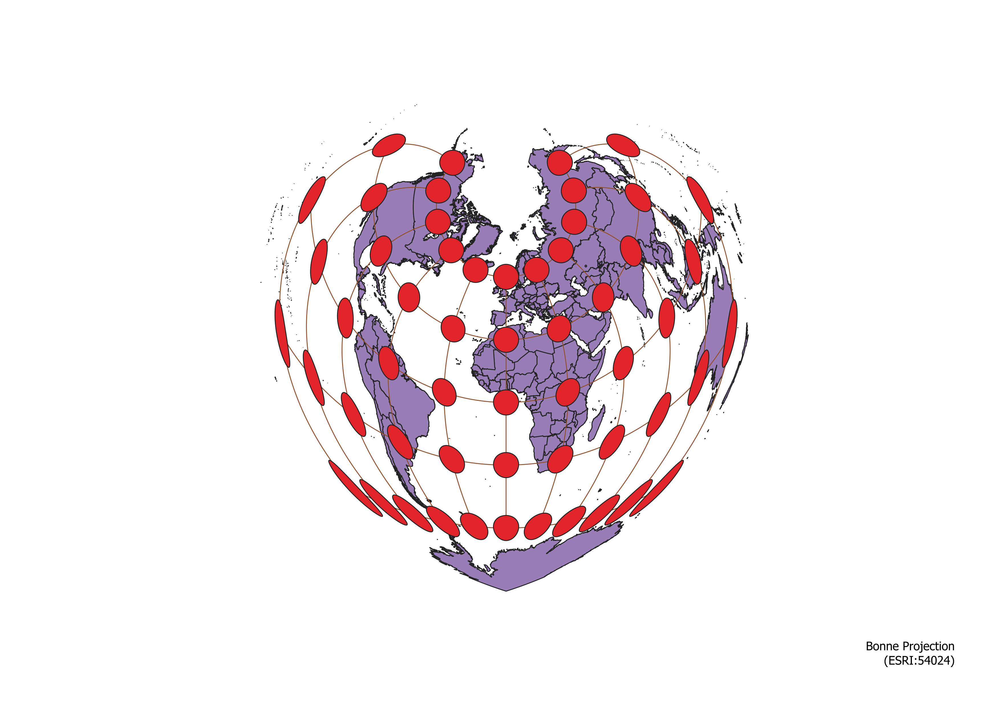
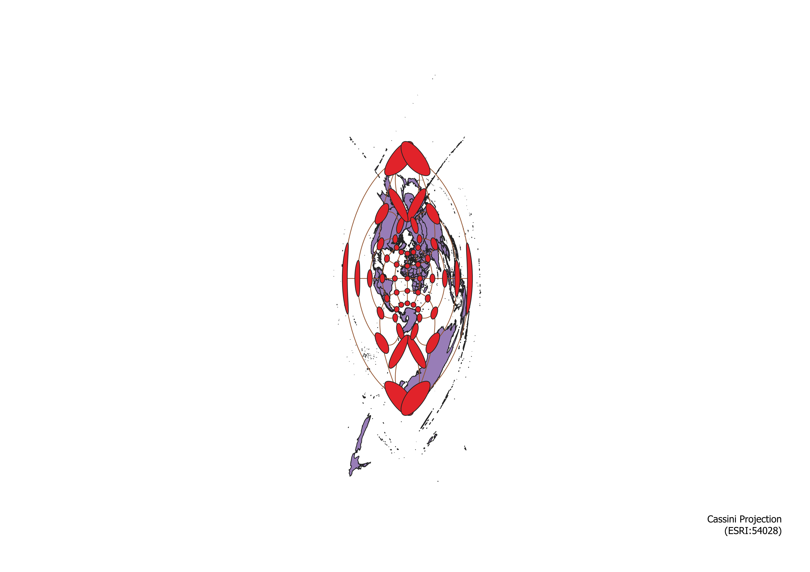
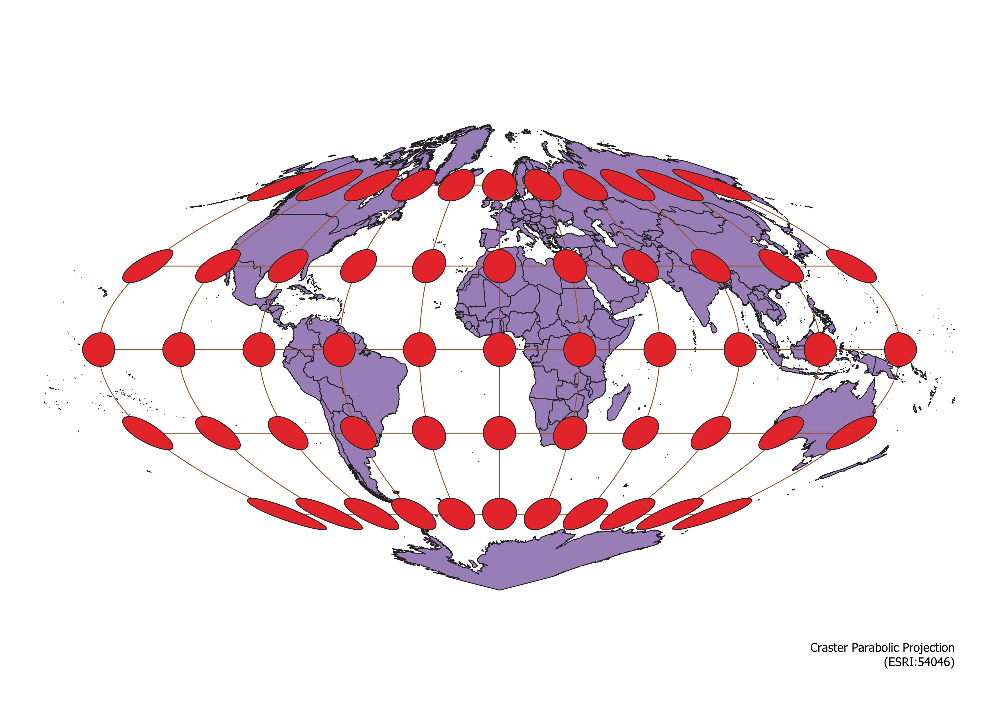
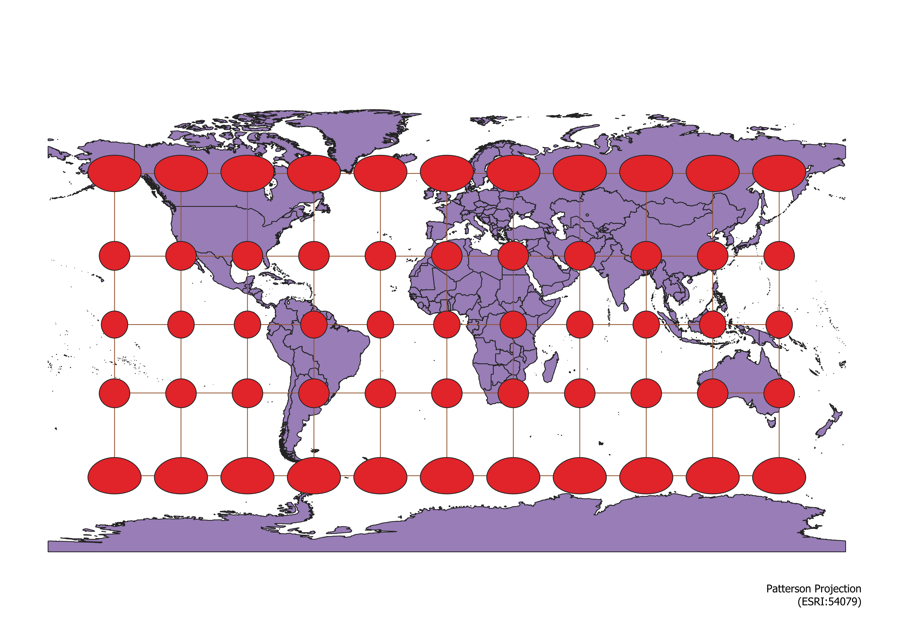
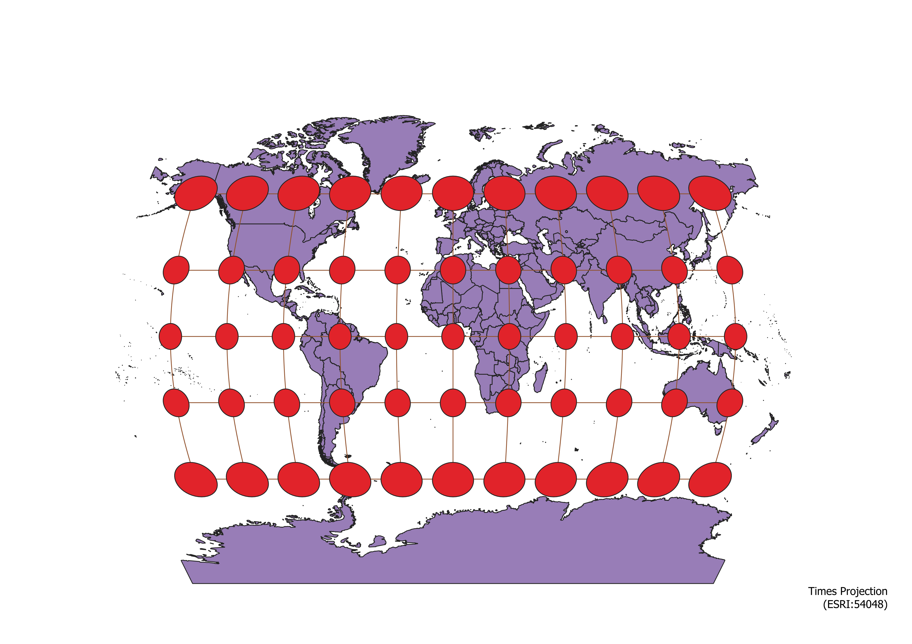
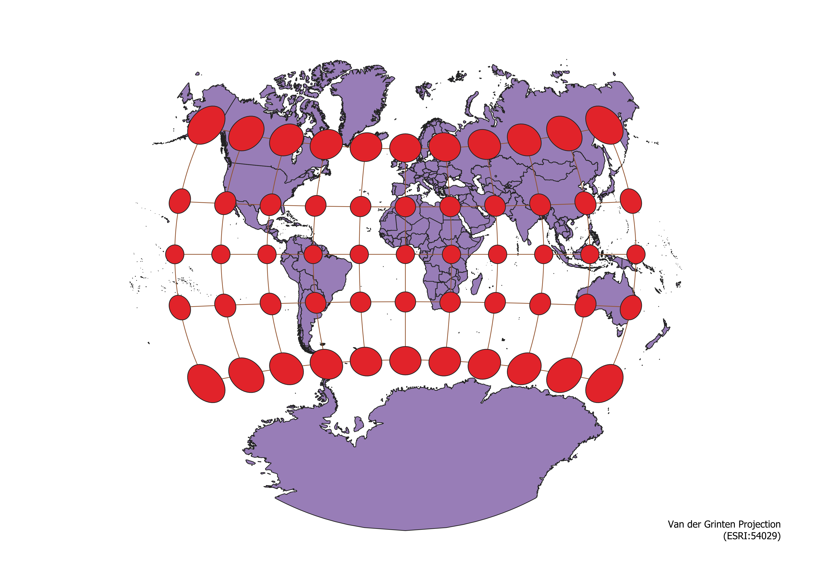
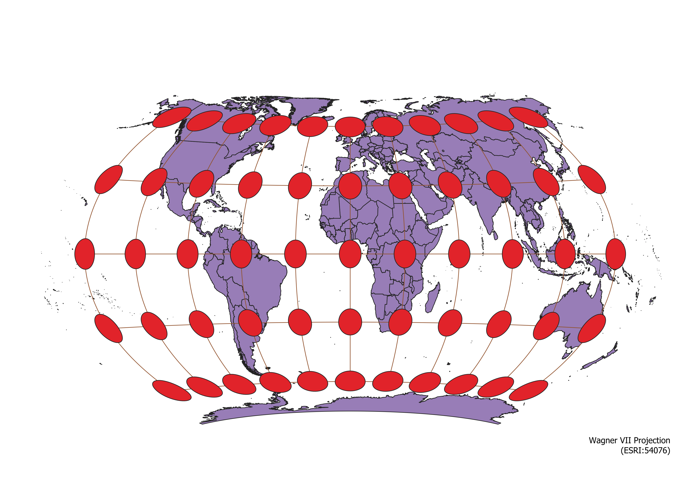

Homework 3
Methodology
In order to create these maps, I first imported the provided SHP file that contained a basic map of the world with international boundaries into QGIS. I then ran the Indicatrix mapper plugin under its default settings, allowing it to create the circles and lines of a Tissot’s indicatrix. I adjusted the appearance of these symbols in order to make the map more visually appealing and understanding. I then changed the project’s coordinate reference system within the project properties settings, changing the projection of the map. I took this new map, put it on a new print layout, added the name and EPSG code into the bottom right corner, and exported the final image as a PNG. I repeated this process for all nine projections.
Aitoff Projection

The Aitoff projection is a pseudo-azimuthal compromise map that distorts shape, distance, direction, and area. Distortions are most pronounced towards the poles and the international date line.
Azimuthal Equidistant Projection

The azimuthal equidistant projection is an azimuthal equidistant map that preserves distance and direction but distorts shape and area. Distortions are most pronounced towards the poles and the international date line.
Bonne Projection

The Bonne projection is a pseudo-conical conformal equidistant map that preserves area and distance but distorts shape and direction. Distortions are most pronounced towards the international date line.
Cassini Projection

The Cassini projection is a cylindrical equidistant map that preserves distance but distorts shape, direction, and area. Distortions are most pronounced towards the poles and the international date line.
Craster Parabolic Projection

The Craster parabolic projection is a pseudo-cylindrical conformal map that preserves area but distorts shape, direction, and distance. Distortions are most pronounced towards the poles and the international date line.
Patterson Projection

The Patterson projection is a cylindrical compromise map that distorts shape, distance, direction, and area. Distortions are most pronounced towards the poles.
Times Projection

The Times projection is a pseudo-cylindrical compromise map that distorts shape, distance, direction, and area. Distortions are most pronounced towards the poles.
Van der Grinten Projection

The van der Grinten projection is a circular compromise map that distorts shape, distance, direction, and area. Distortions are most pronounced towards the poles.
Wagner VII Projection

The Wagner VII projection is a pseudo-cylindrical conformal map that preserves area but distorts shape, direction, and distance. Distortions are most pronounced towards the poles and the international date line.